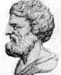

Apollonios von Perge

Geboren: ungefähr 262 v.Chr. in Perga, Pamphylia, Griechenland (nun Murtina, Antalya, Türkei)
Gestorben: ungefähr 190 v.Chr.in Alexandria, Ägypten
Apollonios von Perge war als 'Der Grosse Geometer' bekannt. Über sein Leben ist wenig bekannt, aber seine Arbeiten hatten grossen Einfluss auf die Entwicklung in Mathematik. Speziell sein berühmtes Buch 'Conica' führt in für uns heute wohlbekannte Terme wie Parabel, Ellipse und Hyperbel ein.
Der Inhalt des Werkes "Conica"
- Buch I: Erzeugung des Kegelschnitts und Kreiskegels.
- Buch II: Achsen und Durchmesser der Kegelschnitte.
- Buch III: Transversalen der Kegelschnitte, Theorie von Pol und Polare, Brennpunkt von Ellipse und Hyperbel.
- Buch IV: Untersuchung des Schnittes von Kegelschnitten mit Kreisen.
- Buch V: Theorie der Normalen und Subnormalen, kürzeste und längste Verbindung mit einem Punkt ausserhalb des Kegels und des Kegelschnitts.
- Buch VI: Untersuchung gleicher und ähnlicher Kegelschnitte.
- Buch VII: Sätze über spezielle Eigenschaften von konjugierten Durchmessern.
- Buch VIII: Spezielle Konstruktionsaufgaben für Kegelschnitte.
Berühmt in der Schulmathematik ist natürlich 'Der Kreis des Apollonius':
Zum Kreis des Apollonius
©1997 - 2026 mathematik.ch | Suche 🔍